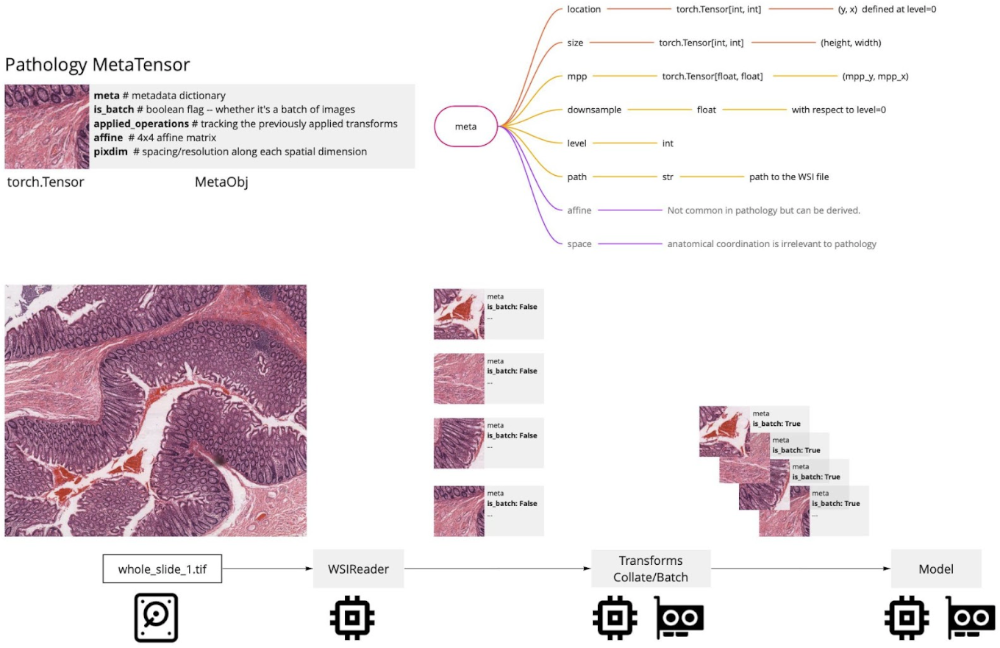
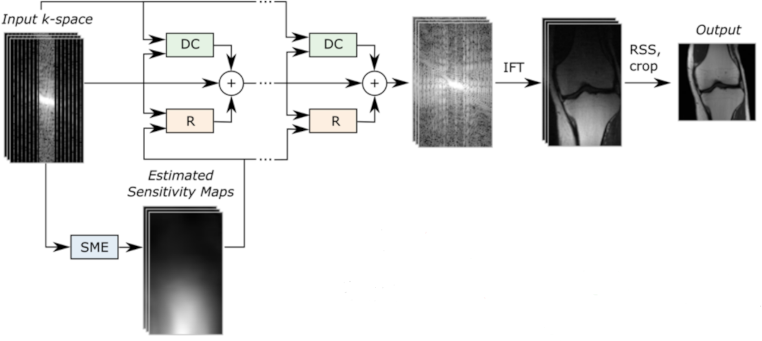

What’s new in 1.0#
Model Zoo
Auto3DSeg
Federated Learning Client
MetaTensor Support for Digital Pathology Workflows
Accelerated MRI Reconstruction
Model Zoo#
The MONAI Model Zoo is a place for researchers and data scientists to use and share the latest and great models from the community. Utilizing the MONAI Bundle format makes it easy to quickly get started using any model with any MONAI Framework (Core, Label, or Deploy). Or, if you’re interested in contributing your models, take a look at our contributing guidelines, which walks you through the process and requirements for submitting your model. For more details about how to use the models, please see the tutorials.
Auto3DSeg#

Auto3DSeg is a comprehensive solution for large-scale 3D medical image segmentation. It leverages the latest advances in MONAI and GPUs to efficiently develop and deploy algorithms with state-of-the-art performance. It first analyzes the global information such as intensity, dimensionality, and resolution of the dataset, then generates algorithms in MONAI bundle format based on data statistics and algorithm templates. Next, all algorithms initiate model training to obtain checkpoints with the best validation performance. Finally, the ensemble module selects the algorithms via ranking trained checkpoints and creates ensemble predictions.
The solution offers different levels of user experience for beginners and advanced researchers. It has been tested on large-scale 3D medical imaging datasets in different modalities.
Federated Learning Client#

MONAI now includes the federated learning (FL) client algorithm APIs that are exposed as an abstract base class for defining an algorithm to be run on any federated learning platform. NVIDIA FLARE, the federated learning platform developed by NVIDIA, has already built the integration piece with these new APIs. With the new federated learning APIs, MONAI bundles can seamlessly be extended to a federated paradigm and executed using single- or multi-GPU training. The MONAI FL client also allows computing summary data statistics (e.g., intensity histograms) on the datasets defined in the bundle configs. These can be shared and visualized on the FL server, for example, using NVIDIA FLARE’s federated statistics operators, see here for an example.
We welcome other federated learning toolkits to integrate with MONAI FL APIs, building a common foundation for collaborative learning in medical imaging.
MetaTensor Support for Digital Pathology Workflows#

In this release, we support MetaTensor in all digital pathology components, and make sure that the future development can benefit from them. With the help of MONAI Pathology Working Group, we have standardized a set of metadata attributes for patches of images extracted from WSI to ensure reproducibility and enhance functionality via relying on a standard set of attributes. The figure above shows all the pathology metadata attributes and their relation to MetaTensors. Please see the tutorials and examples.
Accelerated MRI Reconstruction#

This release includes initial components for various popular accelerated MRI reconstruction workflows.
Many of them are general-purpose tools, for example the SSIMLoss function.
Some new functionalities are task-specific, for example FastMRIReader.
For more details, please see this tutorial for using a baseline model for this task, and this tutorial for using a state-of-the-art model.